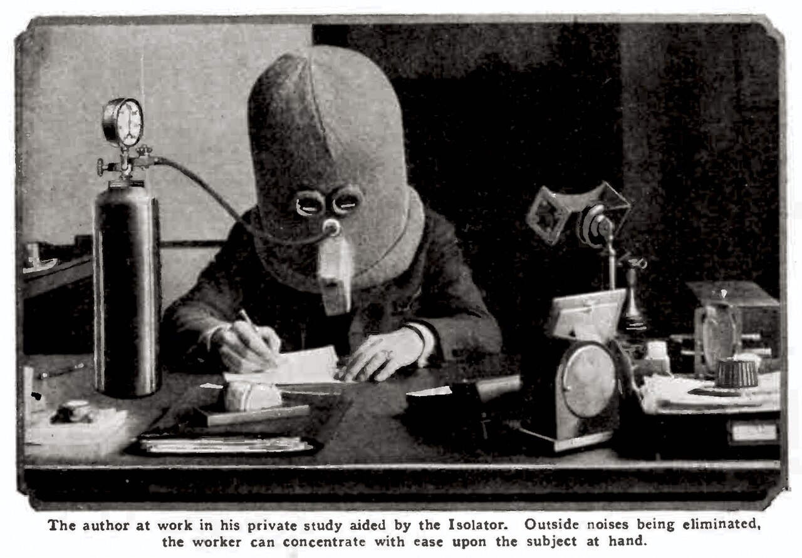
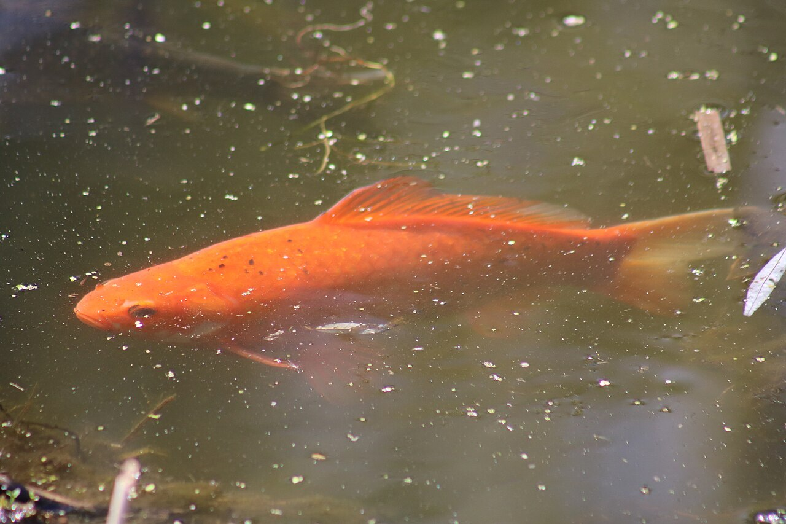

Diqqat muddati haqiqatan ham qisqaryaptimi?
Ko'pchilik telefonlar diqqatimizni “o'g'irlagan”iga ishonadi. Lekin fan boshqacha manzarani ko'rsatadi: qobiliyat joyida, muhit o'zgargan.

1925-yilda ixtirochi va jurnal muharriri Hyugo Gernsbek chalg'ituvchi narsalardan qutulishning radikal yo'lini taklif qildi: “Isolator” — boshga kiyiladigan, tashqi shovqinni to'sadigan og'ir dubulg'a. Unda ko'rish uchun faqat ikkita tor tirqish va nafas olish uchun kislorod trubkasi bor edi.

Bugun bunday dubulg'a kerak emasdek tuyuladi — lekin chalg'ituvchilar yuz baravar ko'paygan. Kitobni bir soat o'qiy olardingiz, endi esa 10 daqiqadan keyin qo'l o'zi telefonga cho'ziladi. Tanish holatmi? 2021-yilda Britaniyada 2000 dan ortiq kattalar o'rtasida o'tkazilgan so'rovda deyarli yarmi aynan shunday his qilishini aytgan. Uchdan ikki qismi esa yoshlarning diqqati yomonlashganiga ishongan.
Chikago universiteti olimi Monika Rozenberg ta'kidlashicha, odamlar his qilayotgan narsa bilan isbotlangan narsa o'rtasida katta tafovut bor. Xo'sh, haqiqat qaysi tomonda?
Oltin baliq afsonasi

Bu mashhur gap 2015-yilgi Microsoft Canada hisobotiga borib taqaladi. Ammo u so'rovlar va raqamli odatlarga tayangan, miyaning imkoniyatini o'lchamagan. Oltin baliq bilan taqqoslash esa umuman isbotlanmagan.
Laboratoriya nima deydi?
Olimlar diqqatni “d2” deb nomlangan test bilan o'lchaydi. 2024-yilgi meta-tahlil 1990–2021-yillardagi 32 mamlakatdan 21 mingdan ortiq kishi natijalarini solishtirdi. Bolalarda pasayish topilmadi, kattalarda esa hatto ozgina yaxshilanish kuzatildi. Missuri universiteti olimi Nelson Kouanning fikricha, o'zgargan narsa miya emas — odatlarimiz.
Diqqat yo'qolmagan — uni tortib olishga mo'ljallangan muhitda saqlab turish qiyinlashgan.
Real hayotda esa o'zgarish bor
Kaliforniya universiteti (Irvine) professori Gloriya Mark taxminan 20 yil davomida odamlarning kompyuterda qanday ishlashini kuzatgan. 2000-yillar o'rtasida bitta ekranda o'rtacha ≈2,5 daqiqa qolishgan bo'lsa, 2020-yillar boshida bu ≈47 soniyagacha tushgan. Tez-tez almashish xatolarni ko'paytiradi, ishni sekinlashtiradi va stressni oshiradi.
Eng qiziq topilma: biz o'zimizni ham tashqi xalaqit qadar tez-tez uzib turamiz. Ya'ni muammoning yarmi — odat.
Diqqatni qanday qaytarish mumkin?
- Muhitni o'zgartiring. Telefonni boshqa xonaga qo'ying — ovozsiz bo'lsa ham u diqqatni tortadi.
- Aniq maqsad qo'ying. “Bugun inshoning 2 abzasini yozaman” kabi aniq vazifa va natijani ko'rib borish diqqatni ushlab turadi.
- Qisqa tanaffus qiling. Miyani vaqti-vaqti bilan dam oldirish va mindfulness diqqatni mustahkamlaydi.
- Uyqu va stressni nazorat qiling. Kayfiyat, uyqu va xavotir diqqatga bevosita ta'sir qiladi.
FLEX yoki Harvardga tayyorlanayotgan bo'lsangiz, bu ayniqsa muhim: insho, lug'at va testlar chuqur diqqat talab qiladi. Bugundan boshlang: telefonni yashiring, taymerni 25 daqiqaga qo'ying va faqat bitta ish qiling.
Manba: David Adam, “Are Attention Spans Really Shrinking? What the Science Says”, Scientific American (Nature jurnalidan qayta nashr). Matn — o'zbek tilidagi erkin qisqacha bayon. Fotosuratlar Wikimedia Commons'dan, CC0 litsenziyasi.